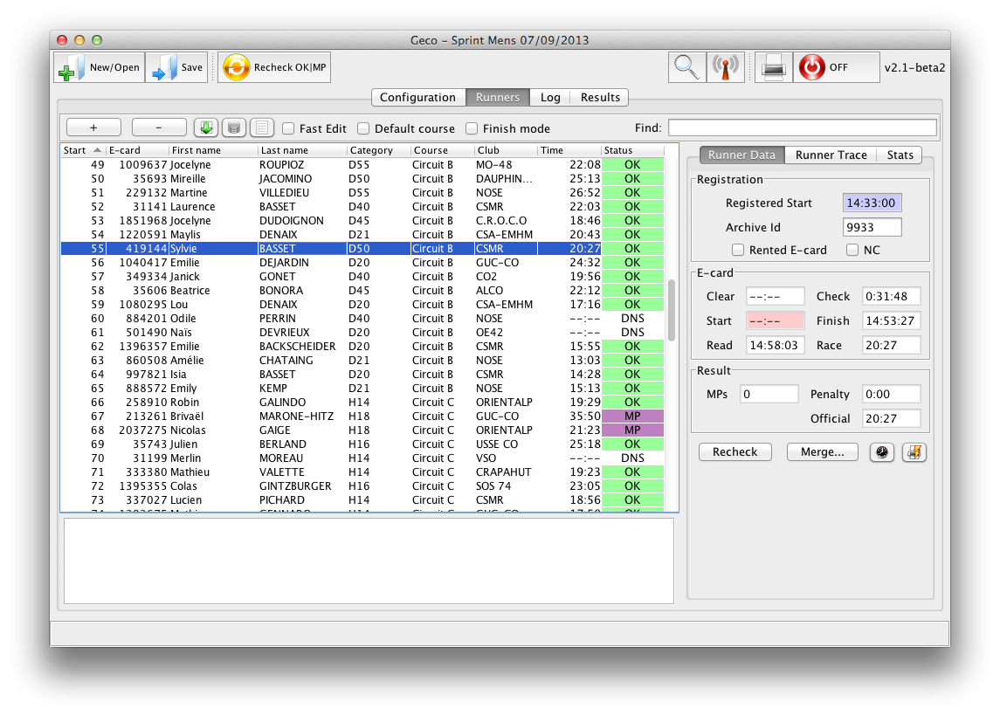

Geco
...is a lightweight desktop application in Java to manage orienteering race in live. Customized for the Orient’Show format, Geco can support any small to medium normal orienteering event.
Philosophy
Geco has three driving forces.
- Enhanced user experience through simple workflow and UI: Geco favors direct accessibility and manipulation of data through visible panels and actions, making obvious how to interact with the application. Features such as Auto handler support events with minimal setup.
- Customization for the Orient’Show format, which has a number of peculiarities (rules and format) not well supported by other apps. But Geco also supports classical formats out of the box, and leans towards an extensible platform for any format of orienteering.
- An open source project for the orienteering community, to easily share new tools and ideas.

Geco is primarily developed by Simon Denier. But you can also contribute!